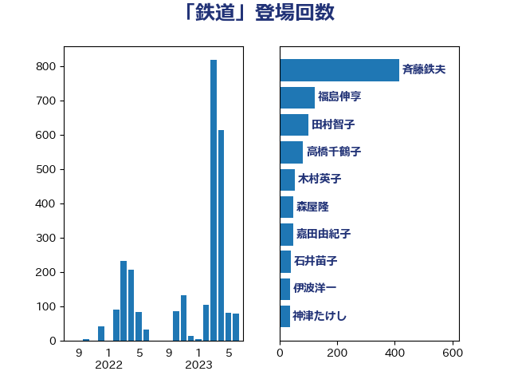

単語「鉄道」

| 赤羽一嘉 | 公明党 | 137 回 |
| 斉藤鉄夫 | 公明党 | 98 回 |
| 森屋隆 | 立憲民主党 | 49 回 |
| 福島伸享 | 無所属 | 48 回 |
| 伊波洋一 | 無所属 | 36 回 |
| 杉久武 | 公明党 | 25 回 |
| 城井崇 | 立憲民主党 | 21 回 |
| 高橋千鶴子 | 日本共産党 | 21 回 |
| 木村次郎 | 自由民主党 | 20 回 |
| 萩生田光一 | 自由民主党 | 19 回 |
| 湯原俊二 | 立憲民主党 | 18 回 |
| 田村貴昭 | 日本共産党 | 18 回 |
| あかま二郎 | 自由民主党 | 16 回 |
| 稲津久 | 公明党 | 16 回 |
| 道下大樹 | 立憲民主党 | 16 回 |
| 長浜博行 | 無所属 | 15 回 |
| 武井俊輔 | 自由民主党 | 14 回 |
| 浜口誠 | 国民民主党 | 14 回 |
| 浜野喜史 | 国民民主党 | 14 回 |
| 青木愛 | 立憲民主党 | 14 回 |
| 岸田文雄 | 自由民主党 | 13 回 |
| 室井邦彦 | 日本維新の会 | 12 回 |
| 小島敏文 | 自由民主党 | 12 回 |
| 榛葉賀津也 | 国民民主党 | 12 回 |
| 岩本剛人 | 自由民主党 | 11 回 |
| 平口洋 | 自由民主党 | 11 回 |
| 木村英子 | れいわ新選組 | 11 回 |
| 朝日健太郎 | 自由民主党 | 10 回 |
| 辻元清美 | 立憲民主党 | 10 回 |
| 伊藤俊輔 | 立憲民主党 | 9 回 |
| 大島敦 | 立憲民主党 | 9 回 |
| 竹内真二 | 公明党 | 9 回 |
| 菅義偉 | 自由民主党 | 9 回 |
| 近藤和也 | 立憲民主党 | 9 回 |
| 中川郁子 | 自由民主党 | 8 回 |
| 古川元久 | 国民民主党 | 8 回 |
| 古川直季 | 自由民主党 | 8 回 |
| 石原正敬 | 自由民主党 | 8 回 |
| 高木啓 | 自由民主党 | 8 回 |
| 加藤鮎子 | 自由民主党 | 7 回 |
| 大西英男 | 自由民主党 | 7 回 |
| 山岡達丸 | 立憲民主党 | 7 回 |
| 川合孝典 | 国民民主党 | 7 回 |
| 市村浩一郎 | 日本維新の会 | 7 回 |
| 秋野公造 | 公明党 | 7 回 |
| 鈴木貴子 | 自由民主党 | 7 回 |
| こやり隆史 | 自由民主党 | 6 回 |
| 中根一幸 | 自由民主党 | 6 回 |
| 盛山正仁 | 自由民主党 | 6 回 |
| 伴野豊 | 立憲民主党 | 5 回 |
| 佐々木紀 | 自由民主党 | 5 回 |
| 古賀之士 | 立憲民主党 | 5 回 |
| 小林鷹之 | 自由民主党 | 5 回 |
| 山口壯 | 自由民主党 | 5 回 |
| 平山佐知子 | 無所属 | 5 回 |
| 玉木雄一郎 | 国民民主党 | 5 回 |
| 田畑裕明 | 自由民主党 | 5 回 |
| 野田国義 | 立憲民主党 | 5 回 |
| 井上英孝 | 日本維新の会 | 4 回 |
| 吉良よし子 | 日本共産党 | 4 回 |
| 小宮山泰子 | 立憲民主党 | 4 回 |
| 山田宏 | 自由民主党 | 4 回 |
| 岡本三成 | 公明党 | 4 回 |
| 渡辺猛之 | 自由民主党 | 4 回 |
| 牧野たかお | 自由民主党 | 4 回 |
| 里見隆治 | 公明党 | 4 回 |
| 金子恭之 | 自由民主党 | 4 回 |
| 金田勝年 | 自由民主党 | 4 回 |
| 上野通子 | 自由民主党 | 3 回 |
| 勝部賢志 | 立憲民主党 | 3 回 |
| 堀井学 | 自由民主党 | 3 回 |
| 大口善徳 | 公明党 | 3 回 |
| 山口那津男 | 公明党 | 3 回 |
| 枝野幸男 | 立憲民主党 | 3 回 |
| 柴田巧 | 日本維新の会 | 3 回 |
| 梶山弘志 | 自由民主党 | 3 回 |
| 森田俊和 | 立憲民主党 | 3 回 |
| 深澤陽一 | 自由民主党 | 3 回 |
| 田村智子 | 日本共産党 | 3 回 |
| 茂木敏充 | 自由民主党 | 3 回 |
| 足立敏之 | 自由民主党 | 3 回 |
| 三浦信祐 | 公明党 | 2 回 |
| 上杉謙太郎 | 自由民主党 | 2 回 |
| 下村博文 | 自由民主党 | 2 回 |
| 伊藤孝江 | 公明党 | 2 回 |
| 伊藤渉 | 公明党 | 2 回 |
| 吉田忠智 | 立憲民主党 | 2 回 |
| 和田有一朗 | 日本維新の会 | 2 回 |
| 塩田博昭 | 公明党 | 2 回 |
| 大岡敏孝 | 自由民主党 | 2 回 |
| 大野泰正 | 自由民主党 | 2 回 |
| 宮本岳志 | 日本共産党 | 2 回 |
| 宮本徹 | 日本共産党 | 2 回 |
| 山谷えり子 | 自由民主党 | 2 回 |
| 岸信夫 | 自由民主党 | 2 回 |
| 泉田裕彦 | 自由民主党 | 2 回 |
| 浅田均 | 日本維新の会 | 2 回 |
| 渡辺周 | 立憲民主党 | 2 回 |
| 源馬謙太郎 | 立憲民主党 | 2 回 |
| 漆間譲司 | 日本維新の会 | 2 回 |
| 牧義夫 | 立憲民主党 | 2 回 |
| 田村憲久 | 自由民主党 | 2 回 |
| 石川博崇 | 公明党 | 2 回 |
| 稲富修二 | 立憲民主党 | 2 回 |
| 篠原孝 | 立憲民主党 | 2 回 |
| 紙智子 | 日本共産党 | 2 回 |
| 菅家一郎 | 自由民主党 | 2 回 |
| 落合貴之 | 立憲民主党 | 2 回 |
| 西村康稔 | 自由民主党 | 2 回 |
| 西銘恒三郎 | 自由民主党 | 2 回 |
| 鈴木敦 | 国民民主党 | 2 回 |
| 長峯誠 | 自由民主党 | 2 回 |
| 阿達雅志 | 自由民主党 | 2 回 |
| おおつき紅葉 | 立憲民主党 | 1 回 |
| たがや亮 | れいわ新選組 | 1 回 |
| 三木亨 | 自由民主党 | 1 回 |
| 中山展宏 | 自由民主党 | 1 回 |
| 井上哲士 | 日本共産党 | 1 回 |
| 今井絵理子 | 自由民主党 | 1 回 |
| 伊藤岳 | 日本共産党 | 1 回 |
| 佐藤茂樹 | 公明党 | 1 回 |
| 倉林明子 | 日本共産党 | 1 回 |
| 前原誠司 | 国民民主党 | 1 回 |
| 務台俊介 | 自由民主党 | 1 回 |
| 古賀友一郎 | 自由民主党 | 1 回 |
| 吉田宣弘 | 公明党 | 1 回 |
| 吉田統彦 | 立憲民主党 | 1 回 |
| 塩村あやか | 立憲民主党 | 1 回 |
| 大西健介 | 立憲民主党 | 1 回 |
| 小沢雅仁 | 立憲民主党 | 1 回 |
| 小熊慎司 | 立憲民主党 | 1 回 |
| 小里泰弘 | 自由民主党 | 1 回 |
| 山本左近 | 自由民主党 | 1 回 |
| 岡本あき子 | 立憲民主党 | 1 回 |
| 岩谷良平 | 日本維新の会 | 1 回 |
| 工藤彰三 | 自由民主党 | 1 回 |
| 平木大作 | 公明党 | 1 回 |
| 後藤祐一 | 立憲民主党 | 1 回 |
| 後藤茂之 | 自由民主党 | 1 回 |
| 打越さく良 | 立憲民主党 | 1 回 |
| 日下正喜 | 公明党 | 1 回 |
| 有村治子 | 自由民主党 | 1 回 |
| 杉尾秀哉 | 立憲民主党 | 1 回 |
| 杉本和巳 | 日本維新の会 | 1 回 |
| 東徹 | 日本維新の会 | 1 回 |
| 松山政司 | 自由民主党 | 1 回 |
| 根本匠 | 自由民主党 | 1 回 |
| 森山浩行 | 立憲民主党 | 1 回 |
| 橋本聖子 | 無所属 | 1 回 |
| 櫻田義孝 | 自由民主党 | 1 回 |
| 池下卓 | 日本維新の会 | 1 回 |
| 河野義博 | 公明党 | 1 回 |
| 津島淳 | 自由民主党 | 1 回 |
| 浅川義治 | 日本維新の会 | 1 回 |
| 浜田聡 | NHK党 | 1 回 |
| 清水真人 | 自由民主党 | 1 回 |
| 熊谷裕人 | 立憲民主党 | 1 回 |
| 片山さつき | 自由民主党 | 1 回 |
| 田島麻衣子 | 立憲民主党 | 1 回 |
| 石井啓一 | 公明党 | 1 回 |
| 石井章 | 日本維新の会 | 1 回 |
| 石川香織 | 立憲民主党 | 1 回 |
| 神津たけし | 立憲民主党 | 1 回 |
| 秋本真利 | 自由民主党 | 1 回 |
| 美延映夫 | 日本維新の会 | 1 回 |
| 舞立昇治 | 自由民主党 | 1 回 |
| 舟山康江 | 国民民主党 | 1 回 |
| 芳賀道也 | 国民民主党 | 1 回 |
| 酒井庸行 | 自由民主党 | 1 回 |
| 阿部司 | 日本維新の会 | 1 回 |
| 青山大人 | 立憲民主党 | 1 回 |
| 馬場成志 | 自由民主党 | 1 回 |
| 高木かおり | 日本維新の会 | 1 回 |
| 高橋光男 | 公明党 | 1 回 |
| 高良鉄美 | 無所属 | 1 回 |
| 高鳥修一 | 自由民主党 | 1 回 |
| 鳩山二郎 | 自由民主党 | 1 回 |
| 鷲尾英一郎 | 自由民主党 | 1 回 |